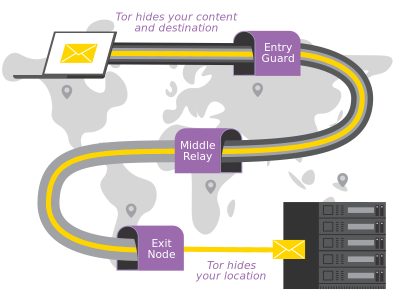

Il est légitime de se demander : "Mais pour quelle raison, est-ce qu'une personne telle que moi voudrait aller sur le Dark Web ?"
La réponse réside dans la manière dont sont hébergés les sites du Dark Web. Comme vu précédemment, le web possède trois parties :
Le Surface Web
Le Deep Web
Le Dark Web
Mais alors que les sites du Surface et du Deep Web sont hébergés sur internet, les sites du Dark Web sont quant à eux hébergés sur des darknets. Le but d'un darknet est d'anonymiser au maximum.
Prenons par exemple le réseau Tor, il s'agit du darknet le plus connu de tous. Celui fonctionne avec des noeuds (des serveurs) hébergés par des milliers de volontaire à travers le monde.

Ici vous pouvez voir qu'avant de consulter le site que vous demandez, vous passez par 3 noeuds différents. Les données envoyées sont chiffrées, ce qui anonymisent les données de l'utilisateur. Quant aux noeuds, ils permettent de cacher le site visité par l'utilisateur ainsi que son IP. Cependant, il se peut que le dernier noeud ait accès à vos données pour les communiquer au site que vous voulez visiter (c'est la raison pour laquelle Tor utilise HTTPS Everywhere pour chiffrer la connection tout le temps).
Tor est hébergé par des volontaires à travers le monde, il existe donc parmis eux forcément une personne malhonnête. Il existe un type d'attaque exploitant ce noeud. Cette attaque se nomme "Attaque de l'homme du milieu" ou "Man in the middle attack". Le but de cette attaque est d'intercepté les données de l'utilisateur en se faisant passer pour le serveur de destination.
Imaginons alors que vous arrivez à vous connectez sans problèmes, vous devez encore rester sur vos gardes car il existe énormément de malware.
Internet
Darknet
Pas anonyme
Anonyme
Peu risqué
Risqué
En résumé, les darknets qui hébergent les sites du Dark Web vous permettent d'être anonyme et de ne pas avoir peur d'être traqué à chaque instant. Cependant, certains darknets tels que Tor possèdent des failles qui les rendent dangereux d'utilisation par un utilisateur lambda.